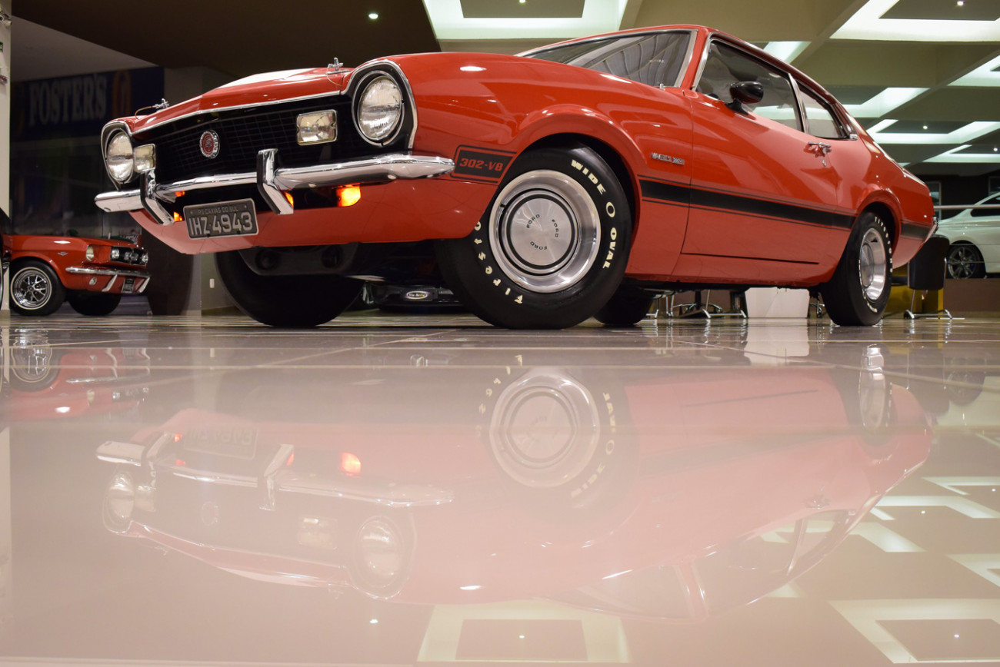

A Oficina
Somos a quinta geração na restauração de carros antigos e possuimos 106 anos de experiência.
Conquistamos pelo quinto ano consecutivo o premio reliquias, eleita a melhor oficina de restauração no estado do Paraná.
Apreciadores de antigomobilismo podem entrar em contato para aquisição de peças raras para a reposição em veículos antigos.
Nossa Localização
Estamos na região central de Curitiba
Diferenciais
- Tecnologia de Ponta
- Especialistas Renomados
- Espaço pub premium
- Buscamos seu carro
- Disponibilizamos passeio de helicópero
- Visita ao Salão do automovel em veneza